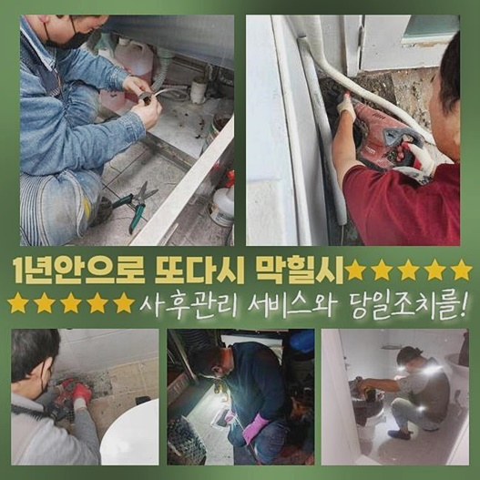
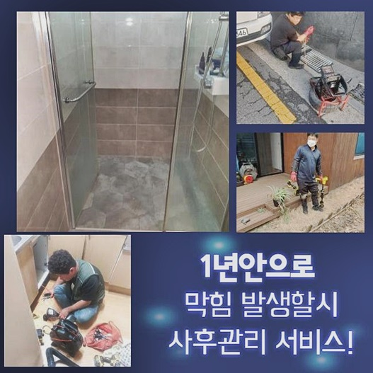
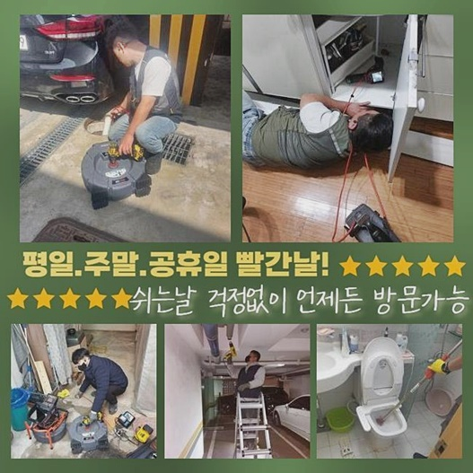
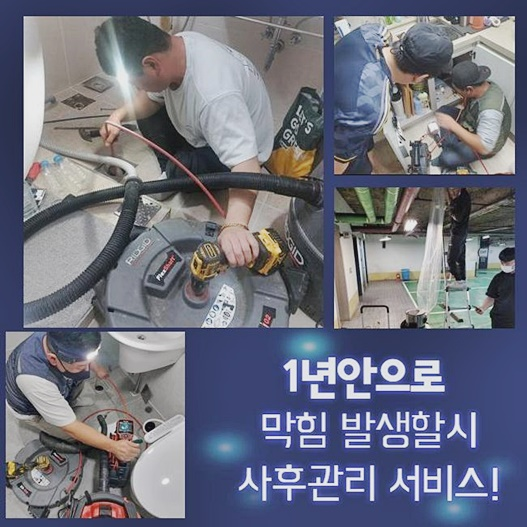
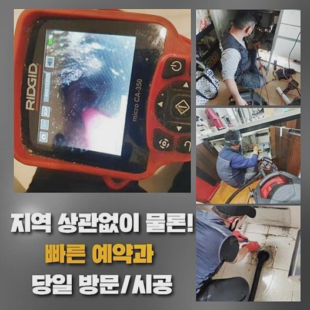
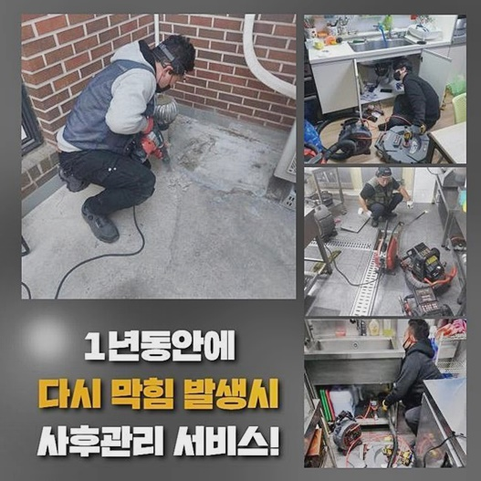
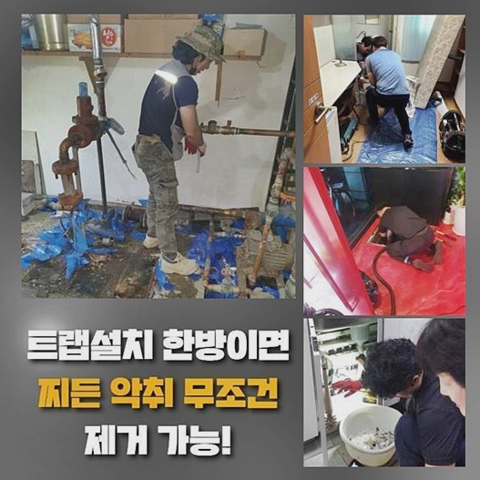

🏠 노원구 하계동싱크대막힘 중계본동 배수구뚫기 해결방법
용인 싱크대막힘 전문 시공 후기

📋 작업 개요
- 위치: 용인
- 서비스 유형: 싱크대막힘, 하수구막힘, 배관막힘, 역류해결, 뚫는업체, 배관청소, 고압세척, 배관보수
- 작업 일시: 2024. 9. 30. 14:32
- 업체명: 하수구수사대 (010-5615-2118)
🔍 문제 상황
노원구 하계동싱크대막힘 중계본동 배수구뚫기 해결방법
배관막힘문제로 출동했던 의뢰자의 식당현장은 물이빠지는게 조금씩 느려졌다고 의뢰를주셨는데 이런상황이라면 신속하게 대처해야한다는 신호에요
자가조치를 시도해보았지만 잠시동안만 해결되고 답답함을 느끼신다면 전문가의 지원을받으시는게 좋아요
신속대처를 원하신다면 저희한테 전화를주시면 곧장 출동뿐만아니라 해결까지 가능하답니다
음식점에서 하수구막힘으로 곤란하다면 확실히 뚫어드리고 쾌적한환경으로 만들수있게끔 도와드릴테니 걱정마세요
고객님께서 설명해주신 내용으로 종합적인 판단을거쳐 가장먼저 찌꺼기들을 석션기기로 제거한뒤 하수도를열어 내부쪽을 확인해보기로했죠
하수구내부를 살피기위해 부속품들을 분리하여 살펴봤습니다
안쪽깊히 퇴적되어있는 슬러지들과 오염물질들을 철저하게 제거했고 정화작업도 진행했어요
역류증세의 이유였던 막힘문제를 처리하고 정상적인 배수상태로 돌아오게끔 조치했어요
깨끗하게 사용하시도록 유지보수에 대한 부분과 관리방법도 일러드렸답니다
신속정확한 대처를통해 문제를처리하여 의뢰자의 편리함을 높혀드렸어요
다음현장은 아파트시설 현장이었는데 전문장비들을 구비하여 문제의현장을 방문해주었죠

🔎 원인 분석
💡 전문가 진단: 정밀 진단 장비를 사용하여 슬러지의 고착 여부를 판명하고 타격/세척 작업을 실시했습니다.
배수상태가 계속해서 느려지고있고 배관세척도 여러번 대처해봤지만 확실하게 뚫리지않았다고 불편함이 느껴진다고 하셨어요
배수문제는 전문적인지식이 필요한까닭에 저희업체에서 도움을드릴수있어 좋게생각해요
착수한작업으로 인하여 고객의불편함이 해결되기를 바라고있어요
작업후에도 문제가 재차발생시 마음편안히 전화주신다면 조속하게 처리해드릴게요
물이확실히 빠져나가지않고 역류증세까지 발생해서 음식물냄새도 퍼지고있는 긴박한 상황인것이 확인되었고 이것들로인해 고객분에게 곤란함들을 초래했어요
싱크대사용시 물이흐르지못하고 물이넘치기까지 하고있다면 건강상으로도 좋지않습니다
그러므로 빠른대처가 필요했는데요
다양한현장의 경험이풍부한 기술자분들이 직접방문한후 막힌이유를 발견했어요
발현된증세를 살펴보았더니 오염물질로인해 막히게된걸로 파악할수있었죠
계속하여 일러드리지만 막힘증세는 빠른대처를 통해서 해결해야하는데 막힘때문에 역류나 악취문제로 일상을 영위하는데있어 불편함을 야기시킬수있어요
저희들은 고객님들의 하수구시스템을 쾌적하게 바꾸어드리고자 확실한해결로 나타낼것을 약속해요!
현장마다알맞게 조치를취해 문제를확실히 타파시키겠습니다
정상적인 배수시스템을 만들기위해 성심성의껏 착수하고 혹시라도 실패하게된다면 비용청구를 하지않습니다

🔧 작업 과정
하수구막힘에 대하여 방지법까지 안내하고있죠
고객께서 쾌적환생활을 영위하실수있도록 꼼꼼히 작업에 착수하겠습니다
저희업체에서는 배수관마다 특징이무엇인지 고려한후 대책을 마련하는 과정을통해 수행하고있습니다
배관카메라를 활용하여 하수구깊은곳을 확인하며 오염정도와 배관구조를 살피고있어요
카메라장비는 오염물질이 어떤모습으로 보여지는지 확실히보여주며 이것을토대로 의뢰자에게 현재상황이 어떠한지 설명하고있어요
이러한절차로 효율있고 세세한 작업과정을 거친답니다
정기적으로 하수구청소를 진행하는게 좋습니다
배관안속은 기름슬러지나 석회물질이 쌓일수있기에 제거해내야만 한답니다
앞서 설명드렸지만 하수구내시경을 쓰면 하수구안쪽까지 진단할수있죠
이것외에도 하수구속 노폐물의 형태도 확인할수가있죠
오염물을 제거하려면 스케일링도구들이 필요한데요
세척을진행할때 기름이물은 분쇄시키기 어렵기에 물을사용해 불린후 흡입기로 제거해주는게 효과적일수있죠
이물이누적되서 단단하게 굳어버린경우 분쇄장비를 통해 제거시킬수있죠
오늘현장은 돌처럼 딱딱해진 슬러지들이 배관시스템을 무너뜨린 상태였습니다
이러한 상황이다보니 석션만으로는 문제처리가 쉽지않았고 샤프트도구를 구비해서 분쇄과정을 거친뒤 고압세척과정으로 하수구를 작업해보기로 결정했죠
일련의 계획으로 막힘문제가 확실히 처리될것으로 기대가되는데요
분해를시작하니 남겨져있던 석회들이 분쇄되었습니다
꽉막혀있는 지점에서는 강도조절을 해가면서 진행해야했는데 이를통해서 하수구에파손을 발현시키지않고서 마무리할수있었죠
분해가마무리되니 오염물질이 분해되서 제거과정을 착수하기에 용이한상황이 만들어졌고 이후엔 고압청소로 시도했는데요
수압이강력한 물을통하여 배관속의 오염물들을 제거해냈는데 이과정도 매한가지로 하수관손상을 발현시키지않도록 심혈을기울여서 작업해야했죠


✅ 작업 완료
일련의과정을 마무리한후 기계를챙겨 현장을나섰어요
하수구막힘 내버려두지마시고 문제를 발견하자마자 조치해보실것을 권유드려요
방치하실경우 2차피해로 이어질수있어 신속한처리를 하셔야합니다
어떤장소라도 60분내로 도착할수있으며 투명히 작업계획을 공개하고있으니 염려마세요
저희를찾아주시면 믿음에 보답할수있도록 실패없는결과물로 보여드리도록 할게요!
문제와관련하여 궁금한부분이 있으시다면 시간관계없이 전화를통해 질문하시면 상세한응대로 맞이해드릴게요




⚠️ 주방 싱크대 배관 막힘 예방 수칙
- ✅ 기름기가 묻은 식기나 프라이팬은 설거지 전 키친타올로 반드시 기름때를 닦아내세요.
- ✅ 주기적으로 싱크대 개수대에 뜨거운 물을 가득 받아 한 번에 내려 배관 내부 기름을 씻어내세요.
- ✅ 배수구 거름망을 미세한 필터로 사용하시고 음식물 찌꺼기가 틈으로 새어 들지 않게 관리하세요.
- ✅ 베이킹소다와 식초를 뜨거운 물과 함께 일주일에 한 번씩 부어주면 배관 살균과 막힘 예방에 좋습니다.
💡 핵심 정리
- 확실한 장비 작업(내시경 점검 및 샤프트 스케일링)으로 원인을 뿌리 뽑습니다.
- 작업 후 1년 이내에 동일한 부위 재발 시 100% 무상 A/S 서비스를 보장합니다.
- 서울 · 경기 · 인천 전 지역에 24시간 언제든 긴급 출동할 수 있도록 항시 대기 중입니다.
❓ 자주 묻는 질문 (FAQ)
🚨 용인 싱크대막힘 문제로 고민이신가요?
정확한 원인 진단과 확실한 시공으로 재발 없는 해결을 약속드립니다.
24시간 긴급 출동 | 서울 · 경기 · 인천 전지역 | 1년 내 재발 시 무상 A/S